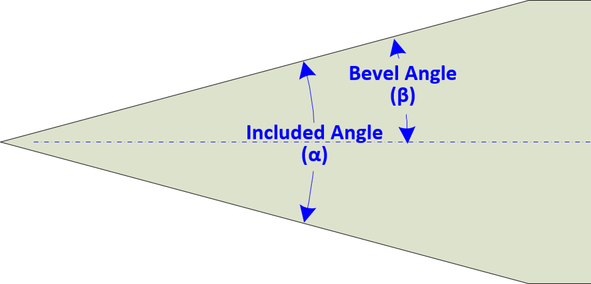

|
|
|
Log Splitter Blades |

Edge Angle
Guidelines shown below are for Included Angles (α).
There is a real chance that the user will encounter inclusions in the wood such as nails or old fence wire. Such inclusions, combined with the strong force behind the blade, will quickly dull a blade and may even add damaged areas to the edge.

A damaged blade can be dangerous to the user or others around this machine. There are scenarios easily imagined where the machine could eject a piece of wood in a way to injur those around the area. Further, dislodging a piece stuck to the blade will typically be done in haste, and without removing the force behind the blade, thusly creating a real chance for injury.
The sharpener should consider adding a micro bevel to the edge of this blade. The micro bevel will help reduce the chance of damange to the edge, and also make the blade easier to resharpen.
The sharpener should be quite careful to not overheat the blade when resharpening. This could quickly remove the temper from the blade.
The proper function of man is to live, not to exist. I shall not waste my days in trying to prolong them. I shall use my time.
Jack London
|
General Guidelines |
|||||
|---|---|---|---|---|---|
|
Type |
α |
Micro Bevel |
Sharp
|
Notes |
|
| General | 30° | 3° - 5° |
|
|
|
The shape of the grind used is a call best made by the tool's use, based on your own experience. Additional notes are available on separate web pages for Grind Profiles, and Micro / Secondary Bevels.